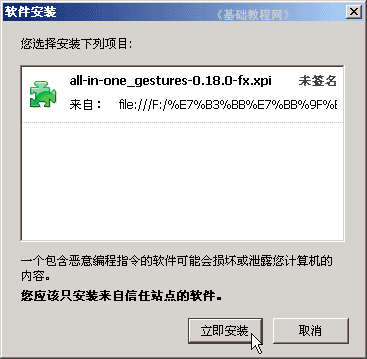
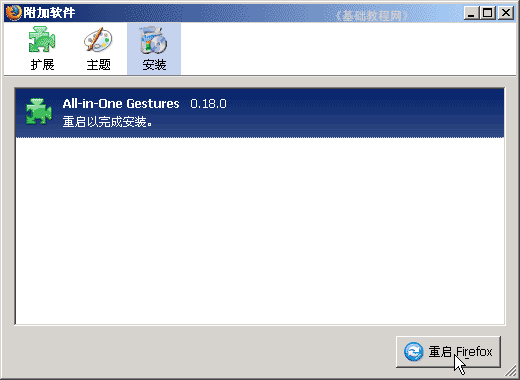
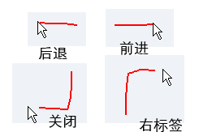
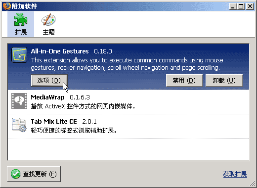
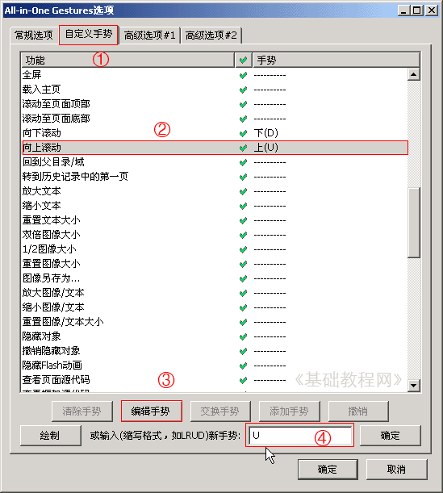

FireFox 基础入门教程
十三、All-in-One Gestures 扩展 返回
安装All-in-One Gestures扩展，可以很方便地使用鼠标右键手势，使得浏览更简便快捷，扩展大小97KB；
1、All-in-One Gestures 鼠标手势
1）下载地址：https://addons.mozilla.org/zh-CN/firefox/addon/all-in-one-gestures/
进去以后点““添加到 Firefox－立即安装””；
本地下载：all_in_one_gestures-0.22.1-fx.xpi 点右键，选“链接另存为”，注意是一个xpi文件；
2）安装：先打开Firefox窗口，然后把xpi文件拖到窗口里，出来一个安装对话框，
稍等等一会点下面的“立即安装”进行安装；

3）接下来出来一个要求“重启”的对话框点下边的“重启Firefox”；

重启以后完成安装，默认使用右键手势，按住右键往左划一条红线，就可以后退，往右划是前进；

2、选项设置
1）点菜单“工具－附加软件”进入扩展管理器，
找到All-in-One Gestures，单击选中，然后点下边的“选项”按钮；

2）在上面找到第二个“自定义手势”选项，然后在列表中找到“向上滚动”，点击选中，
在下边找到“编辑”手势，在右边的文本框中输入“U”，表示向上的手势；
点“确定”，如果提示“冲突”点确定交换；

3）同样把“向下滚动”设为 D ，把“关闭当前标签页”设为 DL ，也就是按住右键先向下再向做划线，最后点“确定”完成；
四个字母方向：L左 R右 U上 D下，可以自己组合一下；
本节学习了All-in-One Gestures 扩展安装和选项设置，如果你成功地完成了练习，请继续学习下一课内容；
本教程由86团学校TeliuTe制作|著作权所有
基础教程网：http://teliute.org/
美丽的校园……
转载和引用本站内容，请保留作者和本站链接。